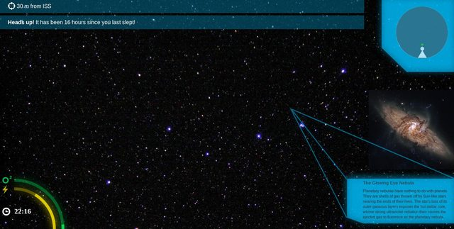
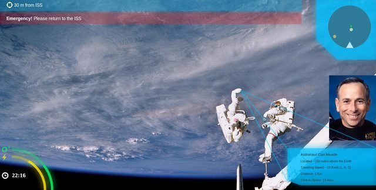
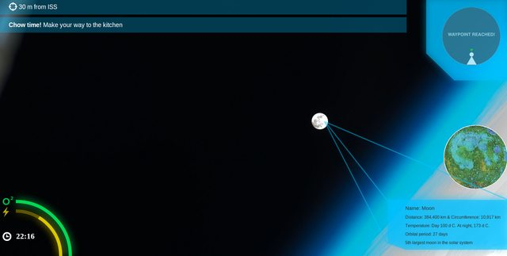
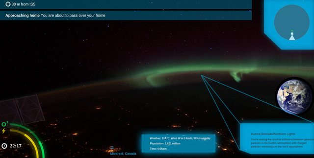

Spacet Challenge for NASA Space Apps 2014
InSight is a voice and motion activated data visualization platform and companion heads up display application. It aggregates information from biometric sensors, location, and external data such as oxygen and radiation. Using this data, InSight enhances the experience of being in outer space by providing contextual information about your surroundings via augmented reality.
Click on the top bar to see an example of a notification or click on the bottom right corner to see an example of contextual information/waypoints when you tell Insights where you want to go or ask what something is.
The product screens were designed with a 1920*1080 resolution. Here I've included screenshots of what it looks like on my screen, click to enlarge:
   From left to right: Stewart Aguanno, Katie Hrycak, Johnny Chauvet, Joseph Kahn
Imagine yourself choosing your vacation destination to be space. It’s a pretty big concept that is quickly becoming feasible. We have already had civilians go to space, sent a tweet from space, and even filmed a music video in the ISS. You too will have those opportunities in the near future. With all of the existing apps and technologies available to you already, what more could you possibly need?
The next level of experience is one that provides you a connection to your surroundings in a heads up display that is voice and motion controlled. Downloading InSight on the heads up display platform of your choice opens up your experience and connection to space.
Point into deep space and learn more about distant galaxies and nebulas that you are looking at, point at any near object to learn more, see more about your fellow tourists while out on a space walk, know your energy and oxygen levels, see a map of where you are in your environment relative to other people and objects, get notified when you are about to pass over home, and see location names of cities and countries while looking at Earth.
Using existing sensors, biometrics from suits, location data, and NASA information of celestial bodies, InSight is the must-have application platform to use and build off of for years to come.